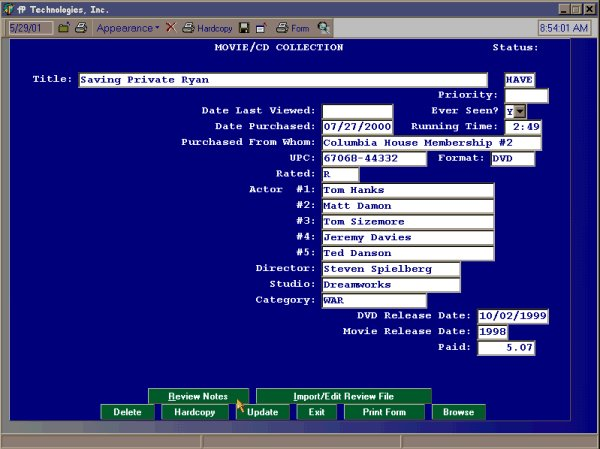
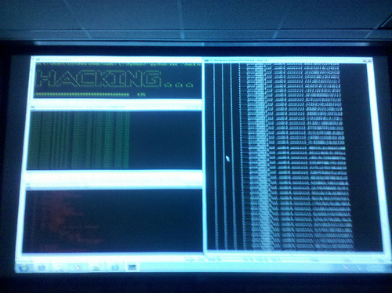

[CCS LABS] Console Application GUI Library Part One
Introduction
Console Applications are normally not designed these days - they are just written. Back in the 1980s in the MS-DOS days we had excellently designed Console Applications - This library will show you how to implement a great GUI for your applications
so your application can stand out from the crowd looking as professional as it works!
Building the Sample
The application is written in Visual Studio 2010, on a Windows Server 2012RC machine. It should work on any Windows XP and better machine with .Net 4 installed.
Description
In this (Part One) of the library build we implement a class which contains some basic text controls so that we can easily position our text, to the left (default), in the Middle of the line, and to the Right of the screen.
We also add the facility to write the desired text backwards (Reverse) and Horizontally on the left of the screen and on the Right of the Screen.
We have also added to utility functions which waits for a user key press before continuing and another which clears the screen.
C#
Edit|Remove
csharp
using System; using System.Collections.Generic; using System.Linq; using System.Text; using System.Drawing; // Not normally used in Console Apps - so add the reference namespace ccslabsConsoleGUI { class ccslabsGUI { /// <summary> /// Returns a string that will be centered on the current console screen. /// </summary> /// <param name="txt"> /// String: The text to center /// </param> internal void PrintMiddle(string txt, bool NewLine = true) { Console.SetCursorPosition((Console.WindowWidth - txt.Length) / 2, Console.CursorTop); if (NewLine) { Console.WriteLine(txt); } else { Console.Write(txt); } } internal void PrintLeft(string txt, bool NewLine = true) { Console.SetCursorPosition(0, Console.CursorTop); if (NewLine) { Console.WriteLine(txt); } else { Console.Write(txt); } } internal void PrintRight(string txt, bool NewLine = true) { Console.SetCursorPosition((Console.WindowWidth - txt.Length), Console.CursorTop); if (NewLine) { Console.WriteLine(txt); } else { Console.Write(txt); } } /// <summary> /// Reverses the text and prints at the current cursor position /// </summary> /// <param name="txt"></param> /// <param name="NewLine"></param> internal void PrintReverse(string txt, bool NewLine = true) { char[] nText = new char[txt.Length]; int idx = 1; // fixes zero initialised arrays foreach (char c in txt.ToCharArray()) { nText[(txt.Length) - idx] = c; // Zero initialised arrays !! idx++; } if (NewLine) { Console.WriteLine(nText); } else { Console.Write(nText); } } internal void PrintHorizontalLeft(string txt) { int x = Console.CursorLeft; int y = Console.CursorTop; foreach (char c in txt.ToCharArray()) { Console.SetCursorPosition(0, Console.CursorTop + 1); Console.Write(c.ToString()); } Console.SetCursorPosition(x, y); } internal void PrintHorizontalRight(string txt) { int x = Console.CursorLeft; int y = Console.CursorTop; foreach (char c in txt.ToCharArray()) { Console.SetCursorPosition(Console.WindowWidth-1, Console.CursorTop); Console.Write(c.ToString()); } Console.SetCursorPosition(x, y); } public void CLS() { Console.Clear(); } public void WaitKey(string txt = "Press Any Key to continue") { Console.WriteLine(Environment.NewLine); Console.Write(txt); Console.ReadKey(); } } }
using System; using System.Collections.Generic; using System.Linq; using System.Text; using System.Drawing; // Not normally used in Console Apps - so add the reference namespace ccslabsConsoleGUI { class ccslabsGUI { /// <summary> /// Returns a string that will be centered on the current console screen. /// </summary> /// <param name="txt"> /// String: The text to center /// </param> internal void PrintMiddle(string txt, bool NewLine = true) { Console.SetCursorPosition((Console.WindowWidth - txt.Length) / 2, Console.CursorTop); if (NewLine) { Console.WriteLine(txt); } else { Console.Write(txt); } } internal void PrintLeft(string txt, bool NewLine = true) { Console.SetCursorPosition(0, Console.CursorTop); if (NewLine) { Console.WriteLine(txt); } else { Console.Write(txt); } } internal void PrintRight(string txt, bool NewLine = true) { Console.SetCursorPosition((Console.WindowWidth - txt.Length), Console.CursorTop); if (NewLine) { Console.WriteLine(txt); } else { Console.Write(txt); } } /// <summary> /// Reverses the text and prints at the current cursor position /// </summary> /// <param name="txt"></param> /// <param name="NewLine"></param> internal void PrintReverse(string txt, bool NewLine = true) { char[] nText = new char[txt.Length]; int idx = 1; // fixes zero initialised arrays foreach (char c in txt.ToCharArray()) { nText[(txt.Length) - idx] = c; // Zero initialised arrays !! idx++; } if (NewLine) { Console.WriteLine(nText); } else { Console.Write(nText); } } internal void PrintHorizontalLeft(string txt) { int x = Console.CursorLeft; int y = Console.CursorTop; foreach (char c in txt.ToCharArray()) { Console.SetCursorPosition(0, Console.CursorTop + 1); Console.Write(c.ToString()); } Console.SetCursorPosition(x, y); } internal void PrintHorizontalRight(string txt) { int x = Console.CursorLeft; int y = Console.CursorTop; foreach (char c in txt.ToCharArray()) { Console.SetCursorPosition(Console.WindowWidth-1, Console.CursorTop); Console.Write(c.ToString()); } Console.SetCursorPosition(x, y); } public void CLS() { Console.Clear(); } public void WaitKey(string txt = "Press Any Key to continue") { Console.WriteLine(Environment.NewLine); Console.Write(txt); Console.ReadKey(); } } }
In the main console application you can see how these GUI elements can be easily used
C#
Edit|Remove
csharp
using System; using System.Collections.Generic; using System.Linq; using System.Text; namespace ccslabsConsoleGUI { class Program { static void Main(string[] args) { ccslabsConsoleGUI.ccslabsGUI GUI = new ccslabsGUI(); GUI.PrintMiddle("CCS LABS GUI DEMO"); GUI.WaitKey(); GUI.CLS(); GUI.PrintLeft("Writing on the Left"); GUI.PrintRight("Writing on the Right"); GUI.PrintMiddle("Writing in the Middle of the Line"); GUI.PrintReverse("This text is reversed"); GUI.PrintHorizontalLeft("Left AND Down"); GUI.PrintHorizontalRight("Right AND Down"); GUI.WaitKey("Press any key to exit..."); } } }
using System; using System.Collections.Generic; using System.Linq; using System.Text; namespace ccslabsConsoleGUI { class Program { static void Main(string[] args) { ccslabsConsoleGUI.ccslabsGUI GUI = new ccslabsGUI(); GUI.PrintMiddle("CCS LABS GUI DEMO"); GUI.WaitKey(); GUI.CLS(); GUI.PrintLeft("Writing on the Left"); GUI.PrintRight("Writing on the Right"); GUI.PrintMiddle("Writing in the Middle of the Line"); GUI.PrintReverse("This text is reversed"); GUI.PrintHorizontalLeft("Left AND Down"); GUI.PrintHorizontalRight("Right AND Down"); GUI.WaitKey("Press any key to exit..."); } } }
The library can be used in ANY .Net application regardless of the language used.
In the next installment I will be adding colour facilities - then menuing... eventually we will have a fully managed .Net Console GUI library which can be used to create really sophisticated console user interfaces like these:

This has buttons, a mouse, fields and labels... a lot better than norma?
 l
lAlthough not as pretty as the previous one - this shows you that colums can be used!

Each of the sections in the image above are separate windows which update independantly of wach other!
Although this and more will be available by the time this library is completed along with a GUI Designer! So stay tuned and place your requests for features in the Q & A.